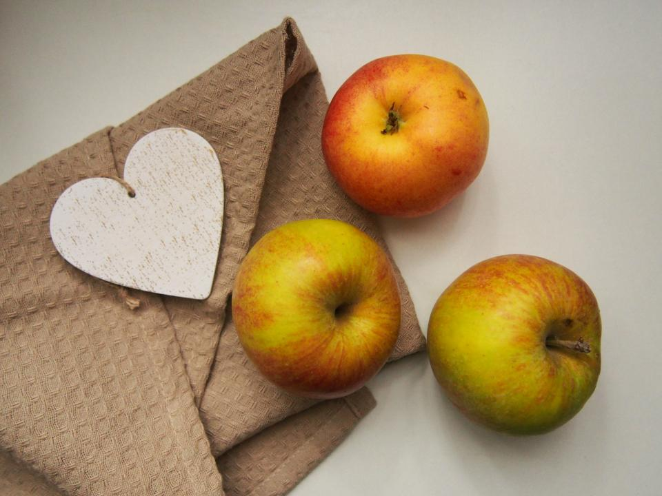
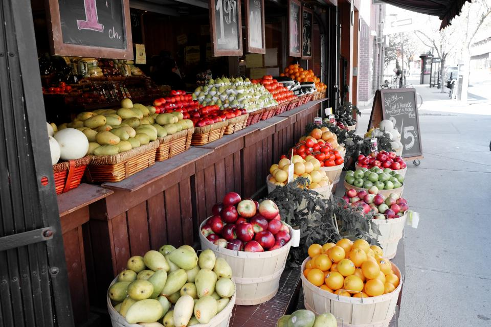
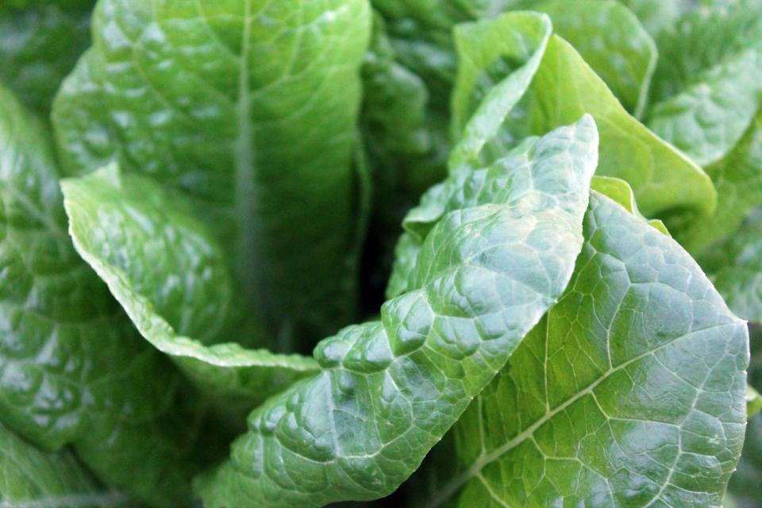
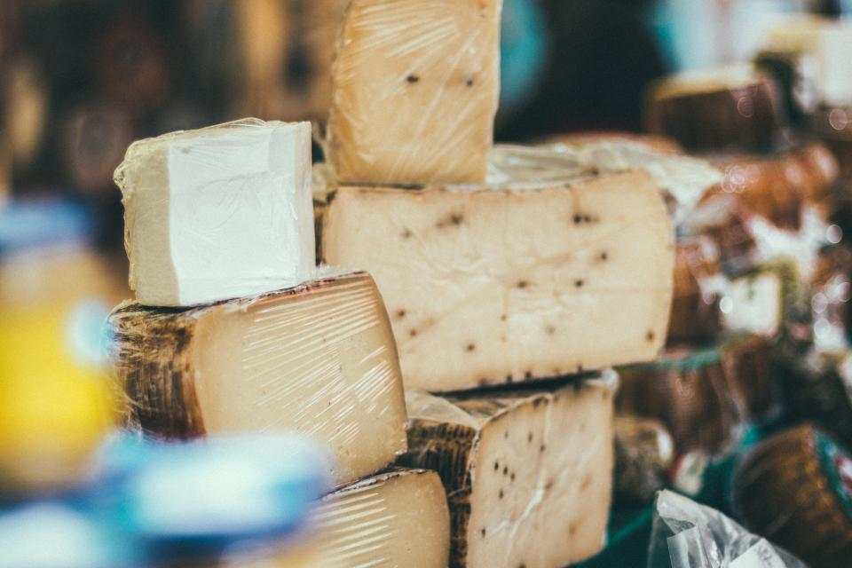

Open TodaySaddar Sunday Market
Saddar, Karachi
Fresh fruits, vegetables, and local produce every Sunday morning.
Sunday · 6AM–2PM
2.5 km
FRESHFIND · KARACHI
Discover Karachi's farmers markets — what they sell, when they open, and what's fresh right now. No guesswork, just good food.
Helping 1,200+ Karachi residents find fresh produce weekly

Some of Karachi's best farmers markets with fresh, seasonal produce from local vendors.

Open TodaySaddar, Karachi
Fresh fruits, vegetables, and local produce every Sunday morning.

Open NowGulshan-e-Iqbal, Karachi
Daily fresh vegetables, herbs, and seasonal fruits from local farms.

Opens 7AMDHA Phase 2, Karachi
Premium organic produce, dairy, and imported fruits in Defence.
Produce that's currently at peak freshness across Karachi's markets.
Ask Sprout anything about FreshFind — from market hours to seasonal produce. Or browse the FAQ.